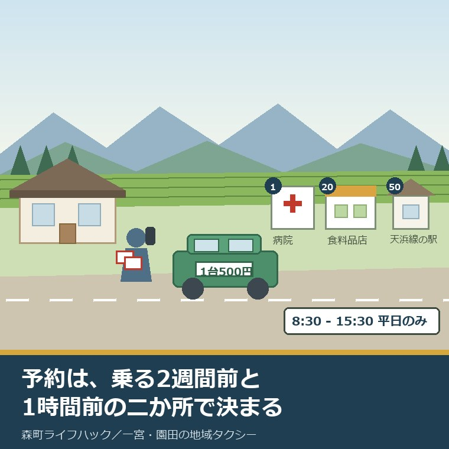
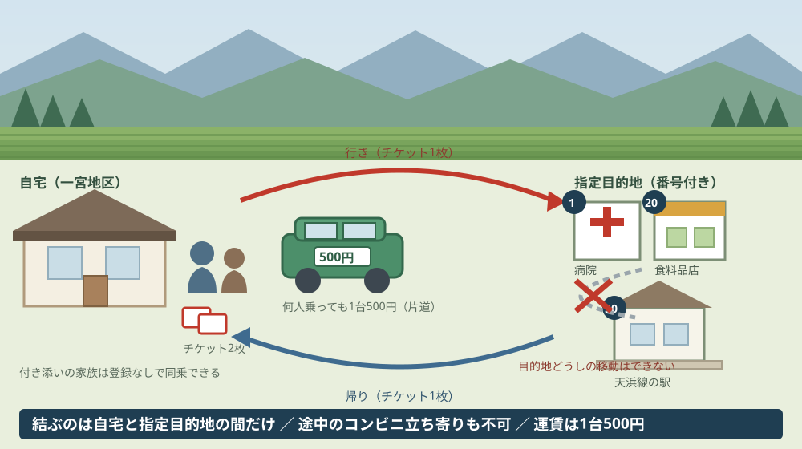
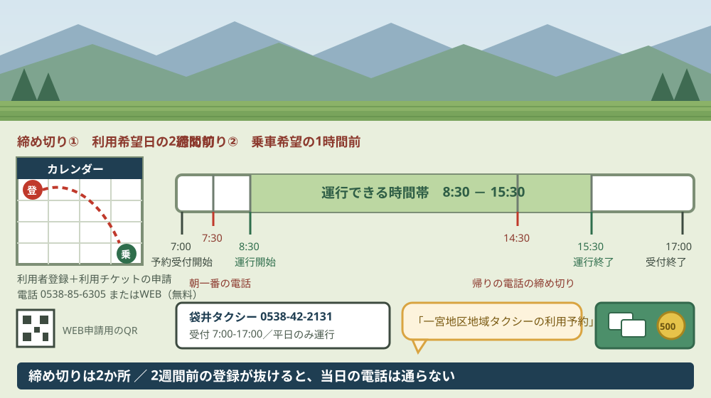

森町の地域タクシーの予約方法｜一宮・園田の登録から乗車まで

この記事の要点
Q. 一宮に住む親が免許を返しました。地域タクシーは、どうやって予約するのですか。
A. 予約の前に登録が要ります。森町公式によれば、地域タクシーは利用希望日の2週間前までに利用者登録と利用チケットの申請（電話またはWEB、登録は無料、窓口は町の企画担当課0538-85-6305）を済ませ、当日は袋井タクシー0538-42-2131へ乗車希望の1時間前までに電話します。運賃は何人乗っても1台500円、運行は平日8時30分から15時30分です。
静岡県周智郡森町（遠州森町）の一宮地区、または園田地区に親が住んでいる。免許を返したので、地域タクシーを使わせたい。この記事は、その電話を今日かけようとしている方に向けて書いています。
結論を先に書きます。いきなり電話をかけても、その日に乗ることはできません。地域タクシーには、乗る前に済ませておく手続きが2つあり、しかもその締め切りは乗車日の2週間前です。
森町公式サイトのページ名は「一宮地区及び園田地区の地域タクシーのご案内」。更新日は2025年10月1日です。このページと、同じページに添付されている地区別のチラシ2本に、必要なことはすべて書かれています。
今日は2026年8月28日です。ここから、公表されている内容を順に並べ、そのあとで実際の1日に置き換えます。
公式情報から確定できること
2026年8月28日時点で、森町公式のページと地区別チラシから確認できたことを並べます。出典は記事の末尾に載せています。
一つ目。本格運行は令和7年10月1日に始まりました。森町公式は「令和6年10月1日から、一宮地区及び園田地区で、日中の交通空白地域解消のため、自宅と決められた指定目的地間の移動のみを可能とした、地域タクシーの実証運行を行ってきました」とし、続けて「このたび、実証運行の成果をもとに、継続的に運行することとなりましたので、令和7年10月1日から本格運行を開始します」と記しています。
二つ目。実証運行はちょうど1年です。令和6年10月1日から令和7年10月1日まで。ただし実証運行の終了日そのものは、ページにもチラシにも書かれていません。
三つ目。対象は地区で決まります。森町公式の本文は「一宮地区及び園田地区にお住いの方」、チラシは「一宮地区にお住まいで利用チケットを持ち、ご自分で予約・乗降車ができる方」としています。
四つ目。年齢の条件は書かれていません。免許返納者に限る、あるいは何歳以上という記載は、ページにもチラシにも見当たりませんでした。条件は年齢ではなく、地区と、チケットの有無と、自分で予約と乗降ができることです。
五つ目。乗る前に2つの手続きが要ります。森町公式は「地域タクシーの利用には、事前の利用者登録と利用チケットの申請が必要となります」と明記しています。登録とチケット申請は別のものとして書かれています。
六つ目。申請は電話でもWEBでもできます。同ページは「利用者登録と利用チケットの申請は、電話・WEBどちらでも可能です」としており、チラシにはWEB申請用のQRコードが載っています。登録は無料です。
七つ目。締め切りは利用希望日の2週間前です。チラシは「利用希望日の2週間前までに登録申請してください」と案内しています。この記事で最も見落とされやすい数字がここです。
八つ目。登録の窓口は町の企画担当課です。電話番号は0538-85-6305、受付時間は平日8時30分から17時15分。所在地は〒437-0293 静岡県周智郡森町森2101-1です。
九つ目。当日の予約先は町ではありません。チラシによれば、予約は袋井タクシー（電話0538-42-2131）へかけます。受付時間は7時から17時です。
十番目。予約の締め切りは乗車希望の1時間前です。チラシは「乗車希望の1時間前までに電話予約」と案内しています。
十一番目。電話口で言う言葉が決まっています。チラシは「一宮地区地域タクシーの利用予約」（園田地区の方は「園田地区地域タクシーの利用予約」）と伝えるよう案内しています。「タクシーを1台お願いします」では、通常のタクシー扱いになります。
十二番目。運行日は月曜から金曜の平日のみです。土曜・日曜・祝日と、年末年始（12月29日から1月3日）は運休です。
十三番目。運行時間は8時30分から15時30分です。予約受付の7時から17時とは別の時間帯である点に注意が要ります。
十四番目。時刻表はありません。予約制のため、便やダイヤは公表されていません。バスのように「何時の便」を選ぶのではなく、希望の時刻を伝える形です。
十五番目。運賃は1台当たり500円です。チラシは「運賃（乗車定員4名）500円」「何人乗っても、1台当たり」「運賃片道500円」と記しています。人数で増えません。
十六番目。支払いは現金と静岡県タクシー共通クーポン券のみです。チラシは「現金と、静岡県タクシー共通クーポン券のみで他の割引制度との併用はできません」としています。交通系ICカードやクレジットカードの記載はありません。
十七番目。チケットは1乗車につき1枚です。チラシは「乗車1回につき利用チケット1枚（往復利用の場合は2枚）」と案内しています。
十八番目。登録していない人も同乗できます。チラシは「利用者登録していない方も、利用チケットを持つ方と同乗すれば利用可能です」と記しています。付き添いの家族が別に登録する必要はありません。
十九番目。行き先は指定目的地に限られます。森町公式は「自宅と決められた指定目的地間の移動のみ」とし、チラシは「指定目的地間同士の移動はできません」「指定目的地以外での乗り降りや途中でコンビニなどへ立ち寄ることはできません」と重ねて書いています。
二十番目。指定目的地には番号が振られています。チラシの一覧は、病院が1番台、買い物・銀行・薬局が10番台から20番台、行政施設が30番台、バス停が40番台、天竜浜名湖鉄道の駅が50番台という並びです。一覧は令和7年10月時点のもので、変更・追加の可能性があると注記されています。
二十一番目。一宮地区と園田地区で一覧の中身が違います。一宮地区には公立森町病院、森町家庭医療クリニック、岩谷医院、森の家クリニック、遠鉄ストア森店、ピアゴ森店、杏林堂薬局森町店、森町役場、一宮総合センター、遠州森駅、森町病院前駅、遠江一宮駅、そして小國神社が挙げられています。
二十二番目。園田地区の一覧には袋井市内の店が入っています。西村医院、JA遠州中央園田支店、森町郵便局、セブンイレブン森町中川店、イオン袋井店、フーズマーケットマム袋井山梨店、円田駅、園田総合センターなどが挙げられ、小國神社の記載はありません。
二十三番目。キャンセルは必ず連絡が要ります。チラシは、キャンセルの際は必ずタクシー会社へ連絡すること、無断キャンセルの場合はキャンセル料がかかる場合があることを記しています。
二十四番目。大字名による対象区域の一覧は公表されていません。「一宮地区」「園田地区」という地区名までで、どの大字までが含まれるのかを示す一覧は、ページにもチラシにも見当たりませんでした。
二十五番目。費用の一部には別の助成があります。森町公式の「森町公共交通利用券助成事業」（更新日2025年5月1日）は、対象を「公共交通利用券購入日現在で75歳以上の町民」または「65歳以上であり、かつ、運転経歴証明書の交付を受けた町民」とし、助成額を「1人につき1年度（4月1日～翌年3月31日）当たり上限3,000円」としています。

この絵で描きたかったのは、矢印が自宅から出て自宅へ戻る形にしかならない点です。病院で診察を受けてから食料品店へ回る、という一般のタクシーでは当たり前の動きが、この仕組みではできません。
もう一つ描いたのは、チケットが2枚並んでいる理由です。行きで1枚、帰りで1枚。往復するつもりなら、家を出る前に2枚あるか確かめる必要があります。
予約の電話が通る時間を、実際の1日に置き換える
ここからは、公表されている時刻を、通院の1日に当てはめて計算します。分母になる数字は前の章のとおりで、計算したのは私です。
朝の話から始めます。運行開始は8時30分、予約は乗車希望の1時間前まで。つまり8時30分に迎えに来てほしいなら、7時30分までに電話を終えている必要があります。受付開始が7時なので、この電話が入る窓は30分しかありません。
帰りはもっと難しくなります。運行終了は15時30分。1時間前ルールを当てはめると、帰りの予約は14時30分までに電話することになります。午前の診察が長引いて会計が14時40分になった日、帰りの足はこの仕組みの中にはありません。
ここが、私がこの記事でいちばん伝えたい場所です。地域タクシーの予約は、乗る日ではなく、乗る2週間前と、乗る1時間前の2か所で決まります。どちらか一方が抜けると、当日の電話は通りません。
費用も計算しておきます。片道500円なので往復1,000円。週に2回の通院なら、月におよそ8回から9回の往復で8,000円から9,000円です。年間ではおよそ10万円前後になります。
助成の上限は年3,000円です。往復1,000円で割ると、3往復分にあたります。制度としてあることと、家計に効くこととは別だと、割り戻すとはっきり分かります。
一方で、人数が増えると意味が変わります。1台500円は人数で増えないので、夫婦2人で往復すれば1人あたり500円、付き添いを入れて3人なら1人あたり約333円です。「親を1人で行かせなくてよい」という設計になっています。
登録の2週間も、日付に直しておきます。2026年8月28日に登録申請をすると、乗車できるのは2026年9月11日以降という計算になります。お盆やお正月に帰省したときに申請しておけば、次の帰省を待たずに親が使い始められます。
曜日の制約も、家族の側から見ると重い条件です。運行は平日のみなので、土曜に帰省して「親の移動を一度見ておこう」と思っても、地域タクシーは動いていません。付き添って一度乗ってみるには、平日に半日を空ける必要があります。
森町の中でも、この差は地区で出ます。町の中心部と外側で暮らし方がどう変わるかは森町の中心部だけ見て町全体を知ったつもりにならない記事に書きました。町営バスと地域タクシーのどちらが実家に来るのかは親が車を返した日に地区へ残る足を並べた記事にまとめてあります。
良い点：この仕組みの、よくできているところ
森町が令和7年10月1日から本格運行に移した地域タクシーには、評価したい点が5つあります。順に書きます。
一つ目。実証運行を1年やってから本格運行へ移したことです。令和6年10月1日に始めて、令和7年10月1日から継続運行。使われなければ畳む選択肢もあった中で、「実証運行の成果をもとに」と書いたうえで続けています。
二つ目。運賃を1台単位にしたことです。1人500円ではなく1台500円。付き添いの家族が乗っても金額が増えないので、高齢の親を1人で送り出さずに済みます。
三つ目。登録していない人の同乗を認めたことです。チラシに「利用者登録していない方も、利用チケットを持つ方と同乗すれば利用可能です」と明記されています。帰省した子や孫が、その場で一緒に乗れます。
四つ目。指定目的地に番号を振り、地区ごとに中身を変えたことです。園田地区の一覧に袋井市内のイオン袋井店とフーズマーケットマム袋井山梨店が入っているのは、園田から見た買い物先が袋井方面にあるからだと私は読みました。町の外の店を一覧に入れる判断は、生活の実態を見ています。
五つ目。予約先をタクシー会社に一本化したことです。役場を経由せず、袋井タクシーへ直接かける形になっています。受付時間も7時から17時と、町の窓口より前後に長く取られています。
もう一つ、書き方として良いと思う点があります。「指定目的地以外での乗り降りや途中でコンビニなどへ立ち寄ることはできません」という一文です。できないことを、コンビニという具体名で書いてある。読んだ人が当日に困りません。
注文したい点：使う側から見て足りないところ
ここからは、森町の外に住みながら実家の親の足を心配している側の立場で、一事業者としての注文を4つ書きます。批判ではなく、使う側から見た報告です。
一つ目。「一宮地区」「園田地区」がどの大字までを指すのかが、公表資料から読み取れませんでした。森町の外に住む子の世代は、実家の住所が地区名でどう呼ばれるのかを知らないことがあります。対象かどうかの入口で止まる人が出ます。
二つ目。2週間前という締め切りが、ページ本文ではなくチラシの側にあります。ページを読んだだけでは「事前の登録が必要」までしか分かりません。いちばん時間のかかる条件が、PDFを開かないと出てこない配置になっています。
三つ目。15時30分という運行終了時刻と、1時間前という予約締め切りの組み合わせです。午後の診察が押した日に、帰りの手段が残りません。正直に書くと、これを運行時間の延長で直すべきなのか、帰りだけ別の扱いにすべきなのか、私にはまだ判断がついていません。1日の運行を長くすれば、その分だけ町とタクシー会社の負担が増えるからです。
四つ目。無断キャンセルのキャンセル料が、金額として公表されていません。「かかる場合があります」までで、いくらかが分かりません。体調が読めない高齢の方が使う仕組みなので、ここは数字が出ていたほうが安心して予約できます。

この図で描きたかったのは、2つの締め切りが別の日にあるという点です。2週間前の登録と、1時間前の予約。片方だけを覚えていると、当日に電話が通りません。
帯の右端を15時30分で切ったのにも理由があります。この時刻を過ぎると、地域タクシーは使えません。その先は一般のタクシーか、家族の車か、天竜浜名湖鉄道になります。鉄道の本数の実際は天浜線の駅が近いという言葉を本数と接続から見直した記事に数えてあります。
対案・結論：今日、ご家族ができること
森町の外に住んでいても、今日のうちに進められることがあります。順番に5つ書きます。役場が閉まっている時間でも、三つ目までは自宅で終わります。
一つ目。実家の住所が一宮地区か園田地区か、それ以外かを確かめてください。地区名が分からなければ、それ自体が最初の質問になります。町の企画担当課（0538-85-6305）へ住所を伝えれば答えが出ます。
二つ目。森町公式のページから、実家の地区のチラシPDFを開いてください。一宮地区と園田地区で指定目的地の一覧が違います。かかりつけの医院と、いつも行く食料品店が一覧に入っているかを確かめます。
三つ目。親の電話に、2つの番号を短縮登録してください。袋井タクシー0538-42-2131（予約用、7時から17時）と、町の企画担当課0538-85-6305（登録用、平日8時30分から17時15分）です。用途が違うので、名前を分けて登録します。
四つ目。使う予定が立っていなくても、利用者登録と利用チケットの申請を先に済ませてください。2週間前という締め切りがあるため、必要になってから申請しても間に合いません。登録は無料で、電話でもWEBでも申請できます。
五つ目。最初の1回は、家族が平日に付き添って一緒に乗ってください。登録していない人も同乗できるので、追加の手続きは要りません。電話のかけ方、伝える言葉、チケットの渡し方を1回だけ横で見ておけば、次から親が1人でかけられます。
ここまでやっても、車を手放すかどうかを今日決める必要はありません。今日の成果は「実家の地区で使える足が1つ、いつでも呼べる状態になった」という一点で十分です。決めるための材料が1つ増えた状態を、私は前進として扱っています。
車のない暮らしが実際に回るかどうかを町全体で見るなら、森町で車なし生活は可能かを公共交通と生活動線から整理したページも使えます。
家族に残す記録
確かめた内容は、その日のうちに1枚にまとめてください。次に開くのが半年後でも、同じ場所から再開できます。
書き出す項目は7つです。①実家の住所と地区名（一宮・園田・その他） ②利用者登録をした日 ③利用チケットの残り枚数 ④かかりつけ医院の指定目的地番号 ⑤いつも行く食料品店の指定目的地番号 ⑥袋井タクシーの電話番号 ⑦公共交通利用券助成を申請したかどうか。
加えて、確認できなかったことも同じ紙に残します。「大字が対象に入るか未確認」も記録です。次に役場へ電話するとき、そのまま質問文になります。
最後に、チケットの置き場所を1行で書いておいてください。往復には2枚要ります。財布の中か、電話の横か。家族が離れて暮らしているなら、置き場所を共有しておくだけで当日の電話が短くなります。
大石の視点
私は磐田市で小さな不動産業を営んでいて、森町の空き家や実家じまいの相談も受けています。ここからは公表資料の話ではなく、私がどう見ているかを書きます。
この件について、私が実際に立ち会った場面は手元にありません。だから体験としてではなく、意見として書きます。
私がこの仕組みを見て最初に思ったのは、「2週間前」という数字が制度の性格を決めているということです。2週間前に登録が要るということは、これは急な用事に応える仕組みではなく、生活に組み込んで使う仕組みだということです。
そう考えると、評価の軸が変わります。「必要になったときに呼べるか」ではなく、「必要になる前に登録を済ませてある家がどれだけあるか」で、この仕組みの成否は決まります。制度の設計より、周知の届き方の問題です。
不動産の相談で私がよく聞くのは、「親が使えるものを全部は把握していない」という言葉です。制度は知っている人だけが得をする。それが一番よくないと、私は思っています。2週間前の登録は、まさにそのタイプの制度です。
もう一つ、私が気にしているのは担い手の側です。この仕組みは、袋井タクシーという1つの事業者の車と運転手で回っています。町が制度を作っても、動かすのは民間の会社です。運転手の数が減れば、制度が残っても便が出ません。
制度としては筋が通っています。それでも、これが10年続けられるかどうかは、公表資料からは判断できません。分からないことは分からないと書いておきます。
家を扱う立場から一つ付け加えます。一宮・園田に地域タクシーがあることは、その地区の家を検討する人にとって材料になります。ただし対象が「お住いの方」である以上、住んでから使える仕組みです。内覧のときに呼べるものではありません。
実家をどうするかの判断は、道路、境界、地目、登記、残置物、維持費という順番で進みます。親の足の確認は、そのどれよりも先に来る項目です。足がある家と、ない家では、住み続けられる年数が変わります。
まとめ
この記事で確認した事実を、最後に並べ直します。すべて2026年8月28日時点で公表されている内容です。
- 森町公式「一宮地区及び園田地区の地域タクシーのご案内」（更新日2025年10月1日）。担当は町の企画担当課（0538-85-6305、平日8時30分から17時15分）
- 令和6年10月1日から実証運行、令和7年10月1日から本格運行。実証運行の終了日の明記はない
- 対象は「一宮地区及び園田地区にお住いの方」で、チケットを持ち、自分で予約・乗降ができる方。年齢の条件は書かれていない
- 乗る前に利用者登録と利用チケットの申請が必要。登録は無料、電話・WEBのどちらでも可能
- 登録申請の締め切りはチラシ記載で「利用希望日の2週間前まで」
- 当日の予約先は袋井タクシー（0538-42-2131、受付7時から17時）。乗車希望の1時間前まで
- 電話口では「一宮地区地域タクシーの利用予約」（園田地区は「園田地区地域タクシーの利用予約」）と伝える
- 運行は月曜から金曜の8時30分から15時30分。土日祝と12月29日から1月3日は運休。時刻表はない
- 運賃は乗車定員4名で何人乗っても1台500円（片道）。支払いは現金と静岡県タクシー共通クーポン券のみ
- 乗車1回につきチケット1枚、往復は2枚。登録していない人もチケットを持つ人と同乗すれば利用できる
- 自宅と指定目的地の間のみ。指定目的地どうしの移動、途中のコンビニ立ち寄りはできない
- 指定目的地は番号付きの一覧で地区ごとに異なる。一宮地区には小國神社と遠江一宮駅、園田地区にはイオン袋井店と円田駅が入っている
- キャンセルは必ずタクシー会社へ連絡。無断キャンセルはキャンセル料がかかる場合があるが、金額の公表はない
- 森町公共交通利用券助成事業（更新日2025年5月1日）は75歳以上の町民、または65歳以上で運転経歴証明書の交付を受けた町民を対象に、1年度あたり上限3,000円を助成。申請は購入日から3か月以内、担当は福祉課地域福祉係（0538-85-1800）
- 私の計算では、往復1,000円で週2回の通院なら月8,000円から9,000円。年3,000円の助成は3往復分にあたる
- 私の計算では、2026年8月28日に登録申請すると乗車できるのは2026年9月11日以降
よくある質問
Q1. 森町の地域タクシーは、どこへ電話すれば予約できますか。
A1. 予約先は森町役場ではなく袋井タクシー（電話0538-42-2131）です。受付時間は7時から17時で、乗車希望の1時間前までに電話します。電話口では「一宮地区地域タクシーの利用予約」（園田地区の方は「園田地区地域タクシーの利用予約」）と伝えます。ただし電話する前に、利用者登録と利用チケットの申請が済んでいる必要があります。登録の窓口は町の企画担当課（0538-85-6305）です。
Q2. 利用者登録は、いつまでに済ませればよいですか。
A2. 森町公式のチラシは「利用希望日の2週間前までに登録申請してください」と案内しています。登録は無料で、電話でもWEBでも申請できます。つまり2026年8月28日に申請した場合、乗車できるのは2026年9月11日以降という計算になります。急に通院が決まってから登録しても、その日には間に合いません。使う予定が立つ前に済ませておく種類の手続きです。
Q3. 運賃500円は一人分ですか。付き添いの家族も乗れますか。
A3. 森町公式のチラシによれば、運賃は乗車定員4名で「何人乗っても、1台当たり」500円（片道）です。人数で増えません。さらに「利用者登録していない方も、利用チケットを持つ方と同乗すれば利用可能です」と記されているため、登録していない付き添いの家族も同乗できます。支払いは現金と静岡県タクシー共通クーポン券のみで、他の割引制度との併用はできません。
最後に一つだけ。ここに書いた運賃、運行日、時刻、登録の条件、指定目的地、助成の金額は、いずれも2026年8月28日時点で公表されている内容です。「一宮地区」「園田地区」がどの大字までを指すのか、利用チケットの1年間の上限枚数、無断キャンセル料の金額、実証運行の終了日、地区外から一時的に帰省している家族が単独で使えるかどうかは、公表資料からは確認できていません。動く前に、必ず町の企画担当課（0538-85-6305）と袋井タクシー（0538-42-2131）へご確認ください。
参考にした公式情報
- 一宮地区及び園田地区の地域タクシーのご案内／静岡県森町（「更新日：2025年10月01日」と表示されていること、「令和6年10月1日から、一宮地区及び園田地区で、日中の交通空白地域解消のため、自宅と決められた指定目的地間の移動のみを可能とした、地域タクシーの実証運行を行ってきました。」「このたび、実証運行の成果をもとに、継続的に運行することとなりましたので、令和7年10月1日から本格運行を開始します。」「地域タクシーの利用には、事前の利用者登録と利用チケットの申請が必要となります。」「利用者登録と利用チケットの申請は、電話・WEBどちらでも可能です」と記されていること、対象が「一宮地区及び園田地区にお住いの方」とされていること、運行日が月〜金曜日（平日のみ）で土日祝日と年末年始（12月29日から1月3日）は運休であること、運行時間が8時30分から15時30分・予約時間が7時から17時であること、地区別チラシ2本がPDFで掲載されていること、担当が町の企画担当課（〒437-0293 静岡県周智郡森町森2101-1、電話0538-85-6305）であることを2026年8月28日に確認）
- 地域タクシーチラシ（一宮地区）／静岡県森町（「令和7年10月 本格運行スタート」と記されていること、「『地域タクシー』は、地域の移動手段を確保するため、タクシー事業者と町が連携して運行するタクシーです。」と記されていること、利用できる方が「一宮地区にお住まいで利用チケットを持ち、ご自分で予約・乗降車ができる方」とされていること、「利用者登録していない方も、利用チケットを持つ方と同乗すれば利用可能です」と記されていること、運賃が「運賃（乗車定員4名）500円」「何人乗っても、1台当たり」「運賃片道500円」とされ支払いが「現金と、静岡県タクシー共通クーポン券のみで他の割引制度との併用はできません」とされていること、「乗車1回につき利用チケット1枚（往復利用の場合は2枚）」と記されていること、予約先が袋井タクシー（0538-42-2131、受付7時から17時）で「乗車希望の1時間前までに電話予約」とされ電話口で「一宮地区地域タクシーの利用予約」と伝えるよう案内されていること、「利用希望日の2週間前までに登録申請してください」と記されていること、「自宅と指定目的地間のみの移動です。指定目的地間同士の移動はできません」「指定目的地以外での乗り降りや途中でコンビニなどへ立ち寄ることはできません」と記されていること、キャンセル時は必ずタクシー会社へ連絡し無断キャンセルはキャンセル料がかかる場合があると記されていること、指定目的地が番号付きで公立森町病院・森町家庭医療クリニック・岩谷医院・森の家クリニック・遠鉄ストア森店・ピアゴ森店・杏林堂薬局森町店・森町役場・森町保健福祉センター・一宮総合センター・遠州森駅・森町病院前駅・遠江一宮駅・小國神社などとして掲げられ「令和7年10月時点、変更・追加の可能性あり」と注記されていることを2026年8月28日に確認）
- 地域タクシーチラシ（園田地区）／静岡県森町（運行日・運行時間・運賃・予約方法・登録の締め切りが一宮地区と同じ内容で案内されていること、利用できる方が「園田地区にお住まいで利用チケットを持ち、ご自分で予約・乗降車ができる方」とされていること、電話口で「園田地区地域タクシーの利用予約」と伝えるよう案内されていること、指定目的地の一覧が一宮地区とは異なり西村医院・JA遠州中央園田支店・森町郵便局・セブンイレブン森町中川店・イオン袋井店・フーズマーケットマム袋井山梨店・円田駅・園田総合センターなどが掲げられ、小國神社の記載がないことを2026年8月28日に確認）
- 森町公共交通利用券助成事業／静岡県森町（「更新日：2025年05月01日」と表示されていること、「自家用車を運転できない高齢者の日常生活の移動を支援するため、町では、公共交通利用券を購入した高齢者の方を対象に、購入費用の一部助成を行います。」と記されていること、対象が公共交通利用券購入日現在で75歳以上の町民、または65歳以上であり、かつ、運転経歴証明書の交付を受けた町民であること、助成額が「1人につき1年度（4月1日～翌年3月31日）当たり上限3,000円」であること、対象の利用券に森町営バス回数乗車券・森町営バス定期乗車券・天竜浜名湖鉄道シルバーパス・天竜浜名湖鉄道普通回数乗車券・天竜浜名湖鉄道定期券・秋葉バスサービス株式会社定期券・商業組合静岡県タクシー協会タクシークーポン券（販売価格3,000円で3,150円つづり）が挙げられていること、申請が購入した日から起算して3か月以内であること、必要書類が領収証（原本）・預金通帳の表紙の写し・65歳以上75歳未満の方は運転経歴証明書の写し・本人以外の口座指定時は委任状であること、「森町在宅重度心身障害者タクシー運賃助成を同一年度に受けた方又は受ける予定の方は対象外となります。」と記されていること、担当が福祉課地域福祉係（電話0538-85-1800）であることを2026年8月28日に確認）
- 森町の公共交通について／静岡県森町（「更新日：2025年10月01日」と表示されていること、森町の公共交通として森町営バス・一宮地区の地域タクシー・園田地区の地域タクシーが並べて案内されていること、問い合わせ先の所在地が〒437-0293 静岡県周智郡森町森2101-1、電話番号が0538-85-6305であることを2026年8月28日に確認）

最終確認日：2026-08-28 ／ 本記事は公表情報と執筆者の見解を分けて記載しています。「一宮地区」「園田地区」が含む大字の範囲、利用チケットの1年間の上限枚数、無断キャンセル料の金額、実証運行の終了日、地区外から一時的に帰省している家族が単独で利用できるかどうかは、公表資料から確認できていません。往復の費用や助成の往復回数への割り戻しは執筆者が公表値を用いて計算した概算で、個別の利用条件を示すものではありません。制度・運行条件は変更されることがあります。動く前に、必ず町の企画担当課（0538-85-6305）と袋井タクシー（0538-42-2131）へご確認ください。